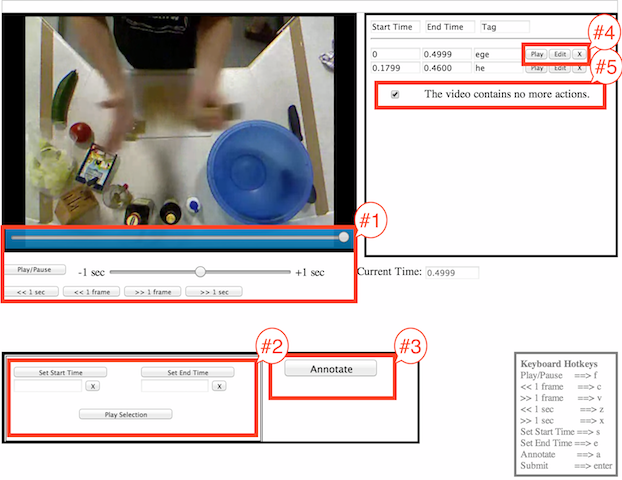

How to Use the Interface

*** Currently, only the *Chrome* web-browser is supported !!!
BOX #1 is the movie control area. Using buttons, you can play/pause the video, move 1 frame backward or forward, and move 1 second backward or forward. You can also use the slider bar for more precise scrubbing within a small time window.
BOX #2 is the video selection area. After noticing a distinct action in the video, find the EXACT beginning time and press the "Set Start Time" button. Then, find the EXACT ending time of the behavior and press the "Set End Time" button. You can check your selection by pressing the "Play Selection" button.
BOX #3 is the annotation (saving) area. Once you find the EXACT starting and ending times, press the "Annotate" button to save your selections. You will then be asked to provide a descriptive tag.
BOX #4 allows you to replay, edit or delete a saved annotation. When you press the "Edit" button, BOX #3 shows different options that allow you to either update or cancel editing.
BOX #5 contains a checkbox which you will toggle ONLY if you have annotated ALL the actions you believe to be in the video (or if the video contains no actions).
You can do the annotations a lot faster by using the keyboard hotkeys!!!
Play around with the interface (below) for a while to make sure you are comfortable with it before accepting a HIT.